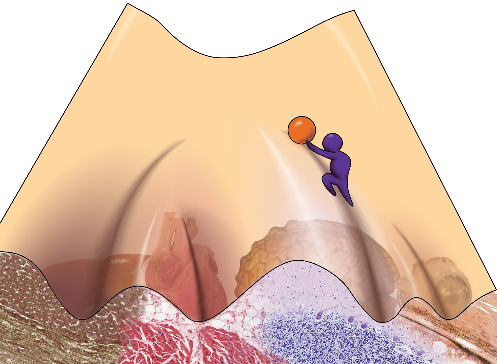

Did you know that every human being on Earth contains more cells in their body than there are stars in the Milky Way? The human body is comprised of 3 trillion cells, each with a specific role to play in maintaining our health. It takes a lot of effort to keep our bodies running! Take, for instance, the simple act of making your coffee in the morning: the neurons in your brain remember where you kept the coffee grounds, the cells in your ear hear your coffee brewing, and the cells on your tongue register that you forgot to put a little sugar in your cup. The most amazing thing is that this diverse group of cells can all trace their origins to a single cell - the zygote, formed from the fusion of sperm and egg.
How does our body go from 1 cell to 30 trillion? From an unspecialized pool of cells to the more than 200 cell types that make up our bodies? The answer lies in our DNA, the genetic code that contains the information each cell needs to carry out its function. If you take a hair cell and a heart cell and compare the DNA, the code is the same. What differs is which genes are turned “on” or “off”. The hair cells have genes that would otherwise tell it to become a heart cell turned off, and vice versa. Likewise, the genes that are on in very early development are present in all cells, but they aren’t expressed in mature cells! By maintaining this radio silence, the cell ensures that it does not revert to an earlier developmental state. As we develop in the womb, the fetus intricately orchestrates how the DNA is expressed in varying cells, which leads to the formation of a complete infant.
To illustrate this, let’s take a look at at the following picture:
 Image by Kat Kozyrytska
Imagine the ball at the top of the valley as a stem cell, which are cells that give rise to more specialized cells in the body. As the ball rolls down the hill, it can enter different valleys. This is akin to the cell deciding to become more specialized. But as you can imagine, the ball cannot climb back up the hill under its own power. A neuron cannot reverse itself and become a stem cell again. Likewise, a cell can’t naturally jump between valleys. If a cell has rolled into the neuron valley, it can’t jump into the heart cell valley. As you can see from the picture, cells naturally follow a trajectory that leads them to a specialized fate. But what if you could use external force to push that cell back up the hill or push it into a different valley, illustrated here by the man pushing the ball? If all that differs between cells is what genes are on or off, can we manipulate cells to become a completely different type by changing how the cells express their genes? If I take a skin cell and turn off all of the skin-specific genes and turn on all of the heart-specific genes, will it turn into a heart cell? These questions have been a driving force in developmental biology for many years, and the labs that seek to address it produce work that constantly changes the way we look at both basic biology and approaches for developing new clinical therapies.
In the fall of 1933, John Gurdon was born in a small community in the south of England. Despite his interest in science, biology was Gurdon’s worst subject, and he actually ranked last in his biology class. His grades were so terrible, in fact, that a school report written about Gurdon stated that “I believe he has ideas about becoming a Scientist; on his present showing this is quite ridiculous…it would be a sheer waste of time, both on his part, and of those who have to teach him”. Undeterred, Gurdon went on to study zoology at the University of Oxford. In 1958, Gurdon took the nucleus (the compartment of the cell that contains its DNA) from a somatic cell (any cell that is neither sperm nor egg) from an African Clawed Frog and injected it into an egg from the same species. In doing so, he attempted to answer a question that had followed cell biologists around for years: are adult cells and the fertilized egg genetically identical?
In these experiments, the cells were from the frog’s intestine, which meant that all of its “intestine” genes were on and its early developmental genes were “off”. The cell went on to develop into a normal frog, which means that it turned “off” all of the intestinal genes and switched “on” all the developmental genes in the proper order to form an entirely new organism! This discovery showed that somatic cells still contain all the information needed to give rise to all cells in the body. In essence, Gurdon was able to push the ball back up the valley in the landscape shown above, giving specialized cells the opportunity to choose their valleys once again. Dr. Gurdon went on to win the 2012 Nobel Prize in physiology or medicine for his groundbreaking work. He shared the prize with Shinya Yamanaka, who conducted equally revolutionary research in Japan.
Dr. Yamanaka is a physician scientist who received his MD degree from Kobe University and his PhD from Osaka City University in the early 90s. While working as a researcher at Kyoto University in the mid-00s, Yamanaka and his team published their work on a significant breakthrough in stem cell biology. They took mouse fibroblasts, which are cells found in the skin, and were able to turn them into cells resembling embryonic stem cells by exposing them to just four transcription factors, which are proteins that turn genes on and off. Just like the frog cells that John Gurdon worked on, these cells were pluripotent, meaning they could give rise to all cells in the body. These cells are now known as induced pluripotent stem cells (iPSCs), and they have paved the way for a mountain of new research in the fields of stem cell biology and regenerative medicine. The work of Yamanaka and his colleagues meant that a scientist could take any cell from a person, expose them to these transcription factors, and create stem cells originating from that person. Like Gurdon, Yamanaka found a way to push cells back up the valley. While embryonic stem cells are still the gold standard, these stem cells are changing the way in which we perform scientific research and the way we think about treating patients in the clinic. In the next section, we’ll explore how we can use these iPSCs to help people.
An inevitable reality of life is that as we age, our bodies deteriorate. Replacing your organs as they cease functioning properly is a plausible strategy to extend life and improve health. In today’s world, if you need to replace an organ, you wait on an organ transplant list. How long you wait is dependent on the organ that you need. For example, according to Cedar-Sinai, the time it takes for a patient to receive a new heart can be anywhere from a few months to a few years. Unfortunately, in the United States 22 people die each day, or ~8000 people per year, waiting for an organ transplant. Even if you receive an organ, you are not out of the woods. A major issue with organ transplantation is a complication called graft vs. host disease, in which the host’s body rejects the new organ. The same cells that are trained to eliminate foreign cells in your body recognize the new organ as an intruder. To try and prevent this from happening, a doctor must suppress the patient’s immune system. In some cases, this is insufficient and people may die due to their own body attacking their new organ. Patients who evade this risk need to remain on immunosuppressant drugs for the rest of their life, which leaves them at high risk for infection and disease. These are devastating drawbacks to organ transplantation. To attempt to get around them, scientists are developing ways to grow organs from the patient’s own cells.
As we discussed above, scientists are now able to generate stem cells from any cell in the body. These new stem cells are pluripotent, so a scientist can use these stem cells to make the cell type of their choosing. Imagine this - as a type 1 diabetes patient, you no longer have properly functioning beta cells, the cells responsible for making insulin. If you make insulin cells from stem cells that were made from your skin, you would be able to reimplant them without rejection. This is called autologous transplantation - your immune system knows the cells are yours, so it chooses not to reject the organ. Using gene editing technologies like CRISPR-Cas9, scientists are attempting to repair tissues that have mutations so that they are fixed before they’re replaced.
One of the first attempts to use these techniques in treating patients was in a clinical trial to treat macular degeneration, one of the most common causes of blindness in humans. Scientists used stem cells that they made from a patient’s somatic cells to grow a sheet of retinal pigmented epithelium. This sheet of cells nourishes the sensory cells of the eye, but it does not function properly in patients with macular degeneration. While the intent was to implant this tissue into a patient’s eye, the trial was halted due to safety concerns. It was found that during the stem cell generation process, mutations were generated. There was no evidence that these mutations would cause cancer, but the investigators erred on the side of caution. While disappointing, it is always important to be as cautious as possible with investigational new therapies. The stem cell field is fraught with technical challenges, but laboratories around the world are working to make these therapies routine.
Trying to make tissues and organs in a dish is difficult. In the above example, investigators had to make a single sheet of cells (the retinal pigmented epithelium). There are efforts around the world to create fully functional, complete organs in the lab, but recapturing all of the intricate signals that the body uses to make an organ artificially is a challenge. Here at Stanford, a developmental biologist named Hiro Nakauchi is taking a very interesting approach to solving this problem. His ultimate dream is to implant human stem cells into the embryos of large animals, such as pigs, that have specific native organs deleted. For example, a pig lacking the ability to grow its own liver could receive human cells that were capable of generating a liver. That would mean the liver of that pig would be entirely composed of human cells. Since farm animals are much easier to raise, this could be a way we could quickly grow the number of human organs we need to satisfy the need for organ transplants. Sounds like science fiction, right? The work of Nakauchi and others has already shown that it is possible to grow a rat pancreas in a mouse [8], so it seems like science fiction is quickly becoming reality.
The ability to convert any cell into a pluripotent stem cell holds great promise for the future of regenerative medicine. Although creating stem cells in the laboratory is a powerful technique, it is important to remember that these technologies are not perfect. We have a long way to go before we can accurately create a true embryonic stem cell in an artificial setting. This caveat highlights the need for support of embryonic stem cell research. Through a greater understanding of the biology of embryonic stem cells, we continue to improve the way we make stem cells for patient therapy. We are quickly approaching an era where we can make stem cells from patients and use them to replace organs that have been damaged. Regenerative medicine has never been more exciting! These breakthroughs are providing new hope for millions of patients around the world who are awaiting new treatments. At the end of the day, further efforts in the lab to improve these groundbreaking techniques will continue to change the way we treat patients in the clinic forever.
If you are interested in learning more about the history and ethics of stem cell biology, check out another Dish on Science article, From Bombs to Blood.
[1] Sender R, Fuchs S, Milo R (2016) Revised Estimates for the Number of Human and Bacteria Cells in the Body. PLoS Biol14(8): e1002533. https://doi.org/10.1371/journal.pbio.1002533
[2] Kramer, D. (2015, June 5). Discovering new cell types one at a time [Web log post]. Retrieved October 19, 2017, from https://www.nature.com/scitable/blog/bio2.0/discovering_new_cell_types_one
[3] Collins, N. (2012, October 08). Sir John Gurdon, Nobel Prize winner, was 'too stupid' for science at school. Retrieved October 19, 2017, from http://www.telegraph.co.uk/news/science/science-news/9594351/Sir-John-Gurdon-Nobel-Prize-winner-was-too-stupid-for-science-at-school.html
[4] A Non-Profit Hospital in Los Angeles - Cedars Sinai. (n.d.). Retrieved October 19, 2017, from https://www.cedars-sinai.edu/Patients/Programs-and-Services/Heart-Institute/Centers-and-Programs/Heart-Transplant-Program/Frequently-Asked-Questions.aspx
[5] Facts and Myths about Transplant. (n.d.). Retrieved October 20, 2017, from http://www.americantransplantfoundation.org/about-transplant/facts-and-myths/
[6] Scudellari, M. (2016, June 15). How iPS cells changed the world. Retrieved October 20, 2017, from http://www.nature.com/news/how-ips-cells-changed-the-world-1.20079
[7] Wade, N. (2017, January 26). New Prospects for Growing Human Replacement Organs in Animals. Retrieved October 20, 2017, from https://www.nytimes.com/2017/01/26/science/chimera-stemcells-organs.html
[8] Kobayashi, T., Yamaguchi, T., Hamanaka, S., Kato-Itoh, M., Yamazaki, Y., Ibata, M., . . . Nakauchi, H. (2010). Generation of Rat Pancreas in Mouse by Interspecific Blastocyst Injection of Pluripotent Stem Cells. Cell, 142(5), 787-799. doi:10.1016/j.cell.2010.07.039
Written with StackEdit.